Slide text
Speaker notes / extracted notes
Show slide thumbnails
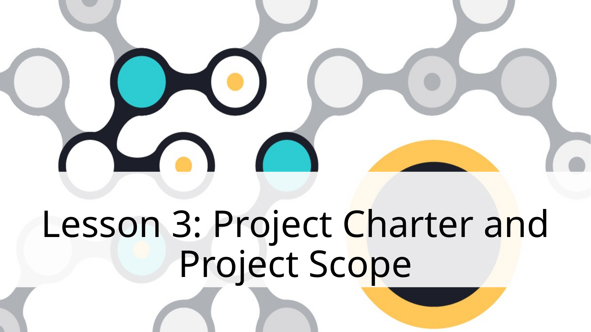
1. Lesson 3: Project Charter and Project Scope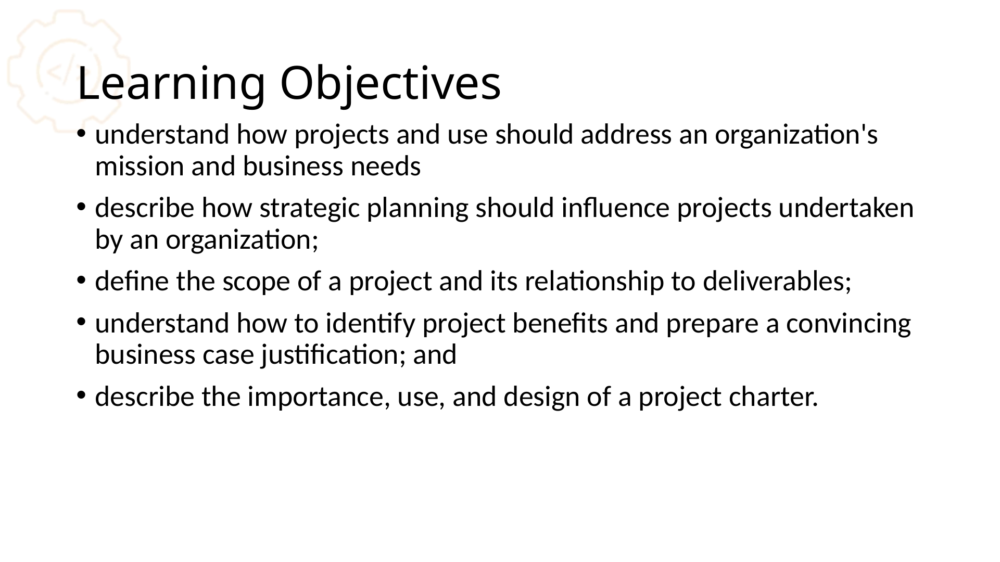
2. Learning Objectives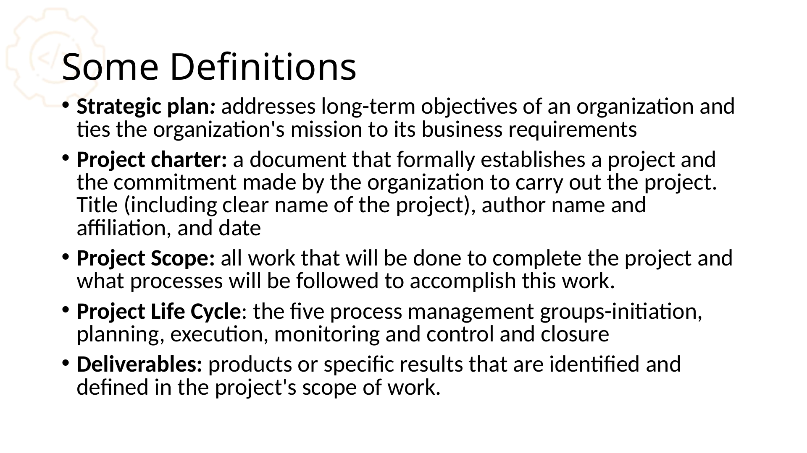
3. Assignment Schedule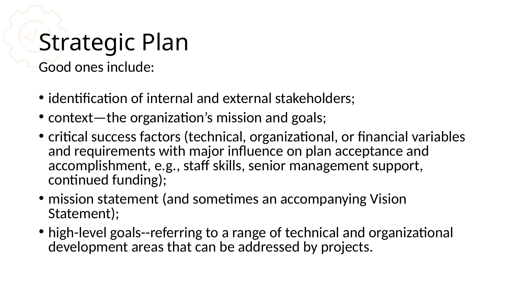
4. Some Definitions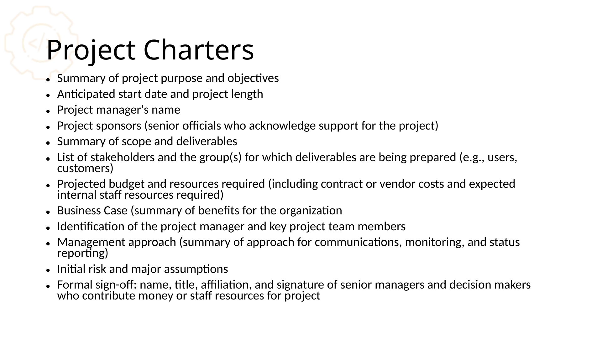
5. Strategic Plan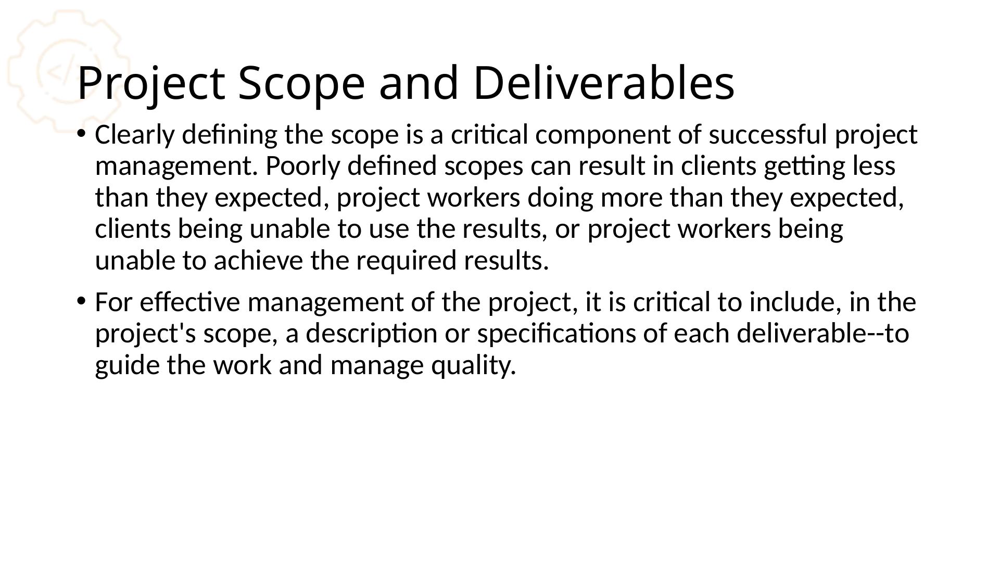
6. Project Charters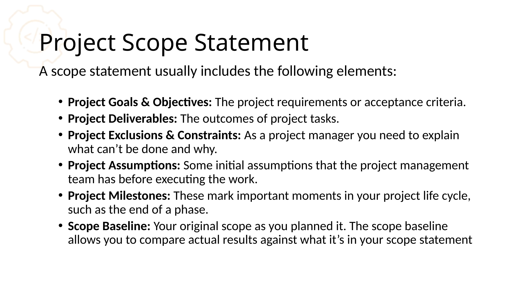
7. Project Scope and Deliverables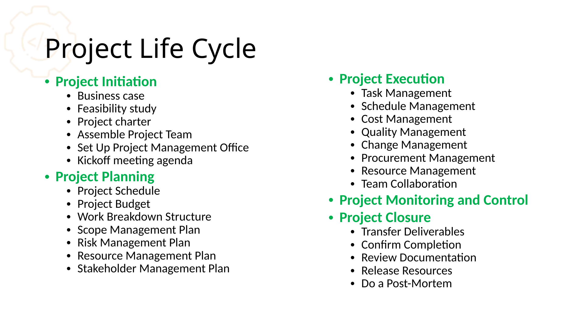
8. Project Scope Statement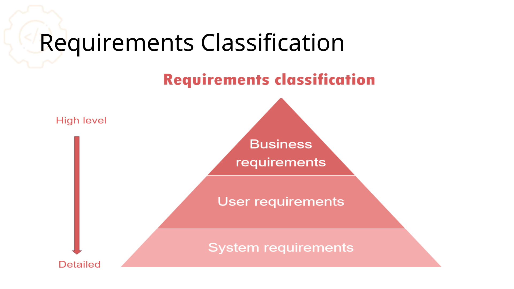
9. Project Life Cycle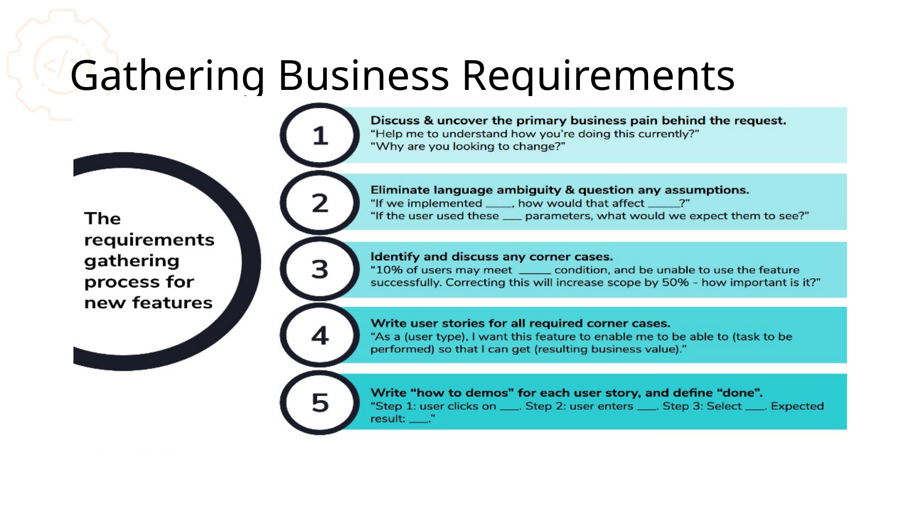
10. Requirements Classification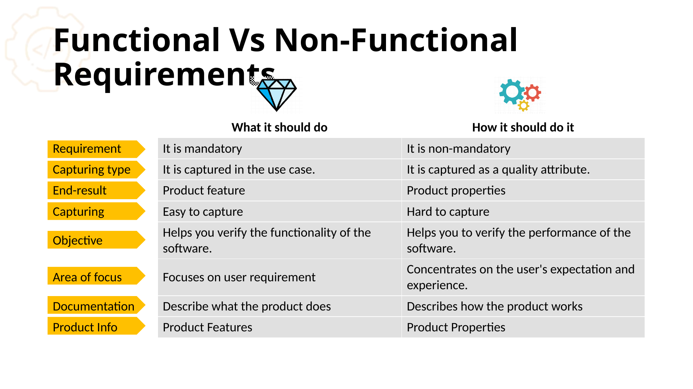
11. Gathering Business Requirements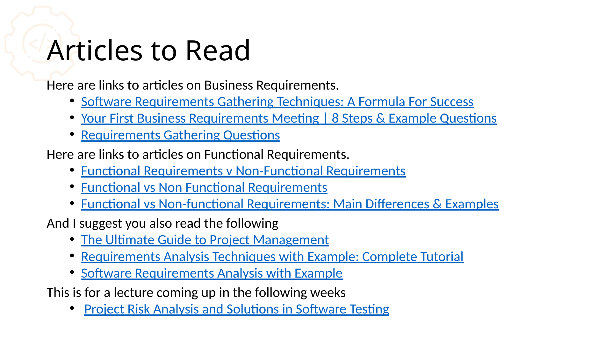
12. Functional Vs Non-Functional Requirements